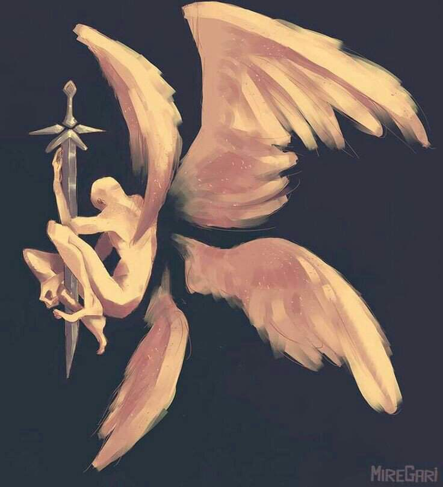
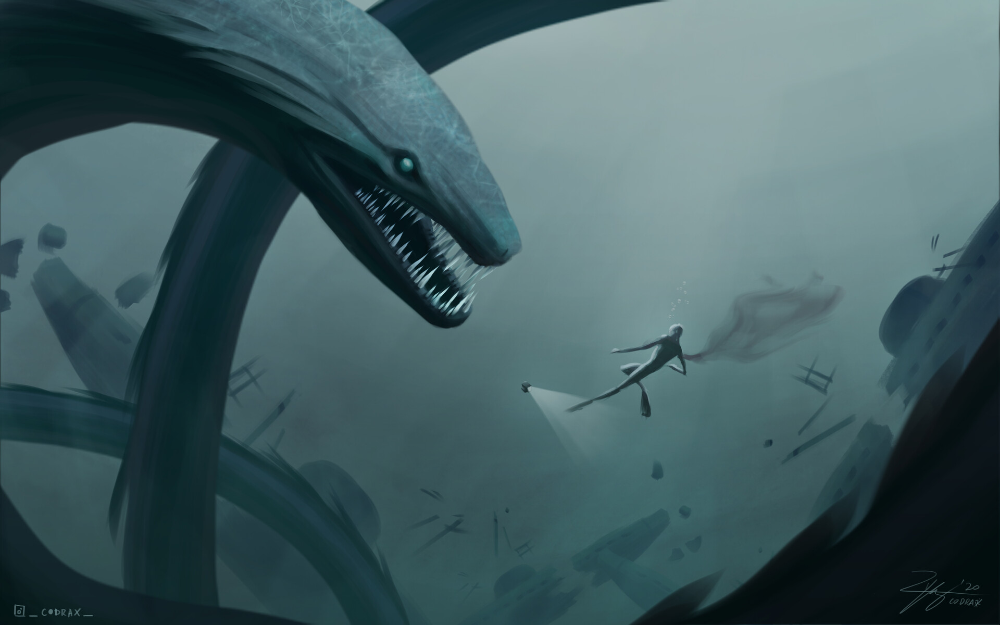
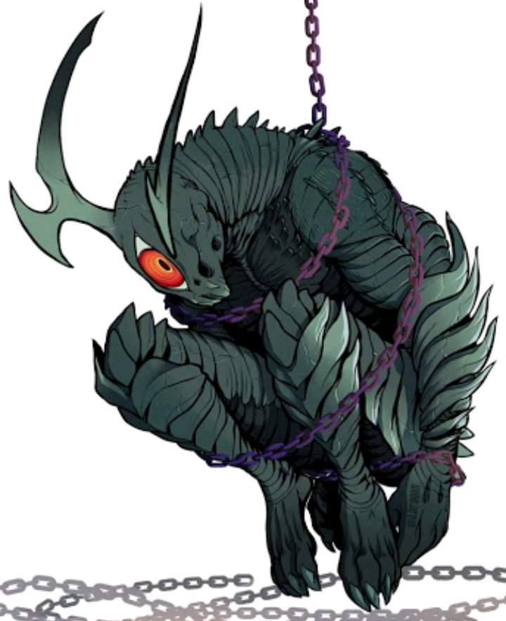
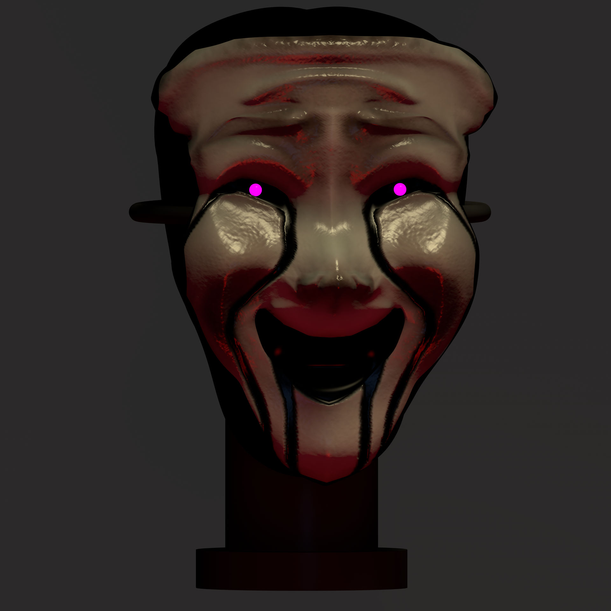

SCP:001 REI ESCARLATE
CLASSE:APOLLYON

7 selos 7 aneis sao 7 noivas para o "REI ESCARLATE".O mais jovem deus da antiguidade nasceu quando a arvore do conhecimento foi plantada e ao nascer recebeu o nome "KARAK",ele era o caçula entre os 9 irmao da terceira linhagem,os outros deus mantinham o equilibrio entre luz e escuridao,e apenas KARAK enchergava a trangressao do mundo que o atormentava de modo insurportavel esse sofrimento incessante que provocou o terrivel tranformaçao de KARAK.Karak cometeu o primeiro e o mais terrivel pecado ele destriu os seus irmao e irmas e o devorou a sua carne sua força sabedoria agora quase invencivel ele continuou a devorar divindades menores tentado acabar com o sofrimento do mundo destruindo assim tudo que neste existia e assim KARAK tornou-se um mornak carmezin o devorador do medo e passo a cometar o segundo e grande pecado KARAR reuniu a sua escolta e devorou todos que nao se curvarao de ante dele a quela que se recusou a reconhecer o seu poder como o mais belo e o mais sabio entre as deusas foi insana assim ele a levou a força como sua esposa e entao sete dias depois ele destruiu a deusa e consumiu o seu sangue a partir desse momento o Deus antigo passou a ter o nome que IGOR que significa o rei escarlate em seu leito de morte Sana deu a luz sete filhas as quais KARAK suas noivas para que elas nao morressem como sua mae ele selou cada uma delas e cada uma delas deu a luz a monstros chamadas leviathans assim iniciando as sete ordens da abominaçao do exército do rei,a primeira noiva ativic era a favorita do rei e recebeu o selo do dominio as filhas delas se tornariam as mais belas e zelosas as armas na guerra enfrentada pelo monarca a segunda agora recebeu o selo do desespero e impos no mundo uma miria de monstros que conduziriam seu mestre a vitoria,ADESTATY desprezava as outras irmas e seus filhos carregavam se o selo da devastação.ASI e a quarta noiva assumiu a forma de uma terrivel fera sobre o emblema da ira ela pariu monstros com armaduras inpenetraveis e com a habilidade de se curarem,os filhos da quinta noiva anuts em virtude do selo da necessidade foram particularmente dotados de magia monarca carmesim entao temendo uma revolta aleijou todos eles hatelife a sexta noiva preferiu permanecer na solidao entao segredos tornou-se seu selo o que ela pos no mundo eram capazes de alterar suas aparencias tornaram-se invisiveis e ate abrirem portais para outros mundos permitindo a passagem de um sangrento exercito.A setima filha de KARAK e filha de SANA chamada AHABAT era a mais fraca de todas as noivas,ela criou herois para acabar com o reinado do rei mas todos foram derrotados.
SCP-001"o guardião"
classe:KETER
O SCP-001,esse SCP ninguem conchece ele de fato so os membros de alto escalão,somente o "Conselho os 5" conchece ele de fato.Sua classe é KETER+,o SCP-001 alcança 304 metros com quatro assas luminosas,ele possui uma espada conchecida como SCP-001-2, ele emiti um calor comparado com o SOL. O SCP-001 fica na frente de um portão com a sua espada em punho,dentro desse portão percebemos que há um bosque com entidades iguais ao SCP-001 conhecido como o "jardin de DEUS"em outra dimenção.Esse bosque tem um pomar cheio de frutas que não existe na TERRA com duas árvores enomer, no centro uma é a "árvore do conchecimento" e a outra a "árvore da vida",caso voçê chega perto do portão voçê sera morto voçê ira morre de uma forma que voçê nem vai ver ou se quer sentir alguma coisa,ele vai te puverizar a nivel sub âtomico em um só movimento,o SCP-001 é tão rapido que vai parecer que ele nem se mexeu,com isso podemos concluir que o SCP-001 pode alcançar a velocidade da luz chegando a "299.792.458 m/s".A fundação fez um experimento com o SCP-073 colocando ele perto do SCP-001,o SCP-073 conchecido como "caim"ficou gravemente ferido e ficando cego,com isso podemos concluir que o SCP-001 é uma das entidades mais poderosas da fundação.
SCP-682 ”O Réptil Difícil-de-Destruir”
classe:KETER

SCP-682 o réptil dificil de destruir,A sua regeneração é abusurda,nenhuma arma nivel militar foi possivel matar so causar danos fisicos, a sua contenção deve ser dentro de uma camara de 5 metros por 5 metros com 25cm de placa de aço reforçado resistente a acido,dentro da camara deve conter acido floridrico até o SCP-682 ficar sub merço e imcapacitado,qualquer tentaviva do SCP-682 de se mexer falar ou violar as regras devera ser reagida de forma rapido e letal,qualquer funcionario não autorizado a falar com o SCP-682 devera se retirado imediatamente,atulmente ele fica em uma base secreta a 50km de uma civilização, a sua descrição parece de um Réptil desconchecido,ele aparenta ter ódio a todo tipo de vida,ele possui força,velocidade e reflexos extremamente altos,o seu corpo se regenera e muda rápidamente crescendo ou diminuindo de tamanho enquanto consome máteriais,o SCP-682 ganha énergia de tudo quem come sendo organico ou não,mesmo com o seu corpo 87% apodrecido ele ainda se comunica,com isso ele não pode ser destriudo com armas "humanas".
SCP-169 "o leviatã"
classe:KETER/APOLLYON

O "leviatã" é uma criatura artropode que vive na escuridão do mar,pouquissima vezes que o "leviatã" foi pra superfice por causa do seu tamanho colossal,não da pra dizer muito sobre a sua aparencia porque poucas vezes o SCP-169 foi pra superfice.O SCP-169 é provavelmente a maior coisa que vive na TERRA,ninguem sabe a sua altura correrto mais estima que o SCP-169 mede cerca de 2000km a 8000km de comprimento,estima-se que essa criatura colossal vive desde a época PALEOZOICA. O quão perigoso o SCP-169 pode ser ? imagina,um tsunami vindo em sua direção,com certeza esse tsunami vai fazer muito estrago,agora imagina novamente VÁRIOS tsunamis vindo em sua direção simultaneamente em vários canto do mundo,abalo cismico tão forte que as placas tectónicas vão se rachar,os paises mais baixos serão destruidos em minutos,com isso seria uma destruição em massa e uma nóticia mundial e nisso tudo o SCP-169 nem chegou na súperfice ainda ele so começou a se mexer,depois dos abalos o SCP0-169 ira começar a emergi e com isso os terremotos e tsunamis irão aumentar trasticamente,so com isso o mundo ja estara destruido,quando indentificarem o SCP-169 irão TENTAR matar ele,mas com o seu tamanho as armas "HUMANAS não ira fazer efeito nenhum no SCP-169,so do SCP-169 começar a andar ele ira da classe KETER para a classe APOLLYON.
SCP-3000 "Anantashesha"
classe:KETER
Em 1971,dois barcos pesqueiros e 15 pescadores desapareceram em bangladesh,na costa da índia,ja fazia tempo que isso estava acontecendo,ficando cada vez mais estranho,com isso tudo a fundação mandou os agentes de campos para descer de submarino no mais profundo póssivel,porem quando mais eles ia profundo mais desconfortavel eles ficavam,áte o ponto que o desconforto virou locura,um dos fúncionarios "willians" chegou a bater a cabeça váris vezes no no vidro do submarino,com isso "willians"morreu por ter batido a cabeça várias vezes antes de impedilo,antes de morre ele falou "não havia nada,nada,nada,nada "willians foi so um homen que ficou doido na profundeza do mar",na escuridão so os farois do submarino iluminava,os tripulantes viram uma serpente gigante,mas não dava pra ver 100% so o olho a boca e um pouco a cabeça,quando eles se aproximaram um pouco o SCP-3000 virou lentamnete em sua direção e os devorou.A cabeça do SCP-3000 mede cerca de 2,5m mas o seu comprimento pode chagar 600km a 800km aproximado.O scp-3000 é uma criatura sedentaria e cárnivora que se move apenas para comer a sua presa mas apesar do seu tamanho o SCP-3000 consegue ser veloz .Uma segunda missão foi feito com funcionários voluntários so que desta vez sem o submarino so com trajes de mergulho,Alfa,Bravo,Foxtrot foram mandado até o local como equipe de mergulho,enquanto eles desciam a psicose atacou novamente e Alfa e Bravo ficou com a mente colapsano enquanto Foxtrot estava surtando e falando que tinha um par de olhos grande e luminosos.O SCP-3000 abriu a sua boca nadou em alta velocidade em direção aos mergulhadores primeiro engolindo o Foxtrot depois o Alfa mais deixou o Bravo vivo por algum motivo,depois que ele engoliu os mergulhadores ele soltou uma substancia cinza e viscosa,Bravo com sua coragem coletou a substancia e colocou em um recepiente,depois disso Bravo voltou a súperfice e nunca mais voltou dado como morto pela fundação,a substancia foi chamado de Y-909 e ela se mostrou muito ultil como amnésico,so que há um pob lema não tem como fabricar o Y-909 ou seja tem que ser direto da fonte.
SCP-2317 "devorador de mundos"
classe:KETER
O SCP-2317 conchecido como uma porta que leva para outra dimenção,mas não é so isso na outra dimenção podemos ver que há um deserto de sal com 7 pilares de mármore,mas isso não é importante oque é importante mesmo é de baixo dos pilares,de baixo dos pilares existe um espaço atmosferico nomeado de SCP-2317-H e bem no meu dele tem uma criatura colossal chegando aos 200km ereto,a sua pele tem milhões de escamas que parece placas,tem chifres na cabeça que parece ramos de árvores e não possui o maquicilar inferior.Na sua costa havia 7 correntes colocadas,atualmente 6 estão quebrados.O SCP-2317 é mais antigo do que a humanidade,muita pessoas acredita que ele pode ser um dos deuses que nasceu juntamente com a árvore do conhecimento.Mas como esssa entidade foi contido ? ninguem sabe como ele foi contido mas sabemos quem o conteu.Em 1894 a.C os antigos misticos Erikeshans e o seu líder keshpeth e com o seu exército de mil homens conseguiu aprisonar o SCP-2317 em um universo-kappa-erikesh,e criaram os pilares e as correntes que aprisona ele até hoje
SCP-035 "a máscara"
classe:KETER
SCP-035,uma máscara que pode controlar qualquer coisa,em 1994 houve vários homicideos em Veneza,com isso foi o suficiente para chamar atenção da fundação que olhou todos os arquivos sobre isso e descobriu que tudo tinha um padrão,todos visitaram uma loja com isso a fundação mandou um grupo treinado para dar uma olhada porque até o dono se suicidou.Depois de um tempo a equipe ouvia sussuros e centia ansiedade ,depois de um mês descobriram que o que causava isso era uma máscara de porcelana branco que estava no rosto de um a gente,depois de acidente a fundação colocou a máscara em uma caixa de vidro com a espessura de 10cm e as porta deve ser trocada diariamente,visita ao SCP-035 é proibido so para pesquisas, a cada duas semanas a caixa deve ser trocada porque a caixa começa a se deteriorar A caixa é entregue ao SCP-101 para ser destriudo.Caso alguem chega cerca de 2m a pessoa sente um vontade de colocar a "máscara" depois que a pessoa colocou a máscara os sinais emitidos por ela anula os impulsos cerebrais da pessoa levando a eminente morte cerebral,a máscara depois de colocada no rosto pode fazer o que quiser falar,escrever,andar mas depois de algumas horas o corpo da vitima fica igual de um múmia mas a pessoa ainda tem a codernação motora ativada, depois do corpo começar a se decompor,a máscara procura um novo hospedeiro.Depois de um tempo as parede começou a sair um liquido pegajoso atigindo o PH de 4,5, com esse acidente foi necessario a usar o SCP-148que é uma liga de platina e outros máteriais,esse material é capaz de bloquear ondas celebrais telepaticas e extracensoriais com essa medida foi póssivel conter o SCP-035.
SCP-093 "homen tímido"
classe:KETER

SCP-96 é uma criatura umanoide com cerca de 2,38 de altura,braços chegando a 1 metro,garras nos lugars dos dedos,sem nenhum tipo de pelo e a sua mandíbula abre 4x mais do que um humano normal,é eguiho e possui olhos brancos.O SCP-96 geralmente ele é dossio e fica so olhando para a parede,mas sempre que uma pessoa olha para o seu rosto o SCP-096 passa a ser o SCP-096-1,primeiramente ele começa a chorar,depois a gritar e então o SCP-096-1 começa a perceguir a pessoa sem parar,em nesse modo nenhuma arma humana faz efeito nem arma nivel militar. A muito tempo teve uma quebra de contenção dentro da fundação e era porque um alpinista viu uma foto do SCP-096, e então o SCP-096 começou a chorar depois gritar e então rasgou a sua gaiola com suas garras e correu vários quilômetros atrás do alpinista,com isso a fundação vazou sem querer a sua velocidade mas estava censurada e na censuara havia três digitos,com isso podemos supor que a sua velocidade pode chegar a mais 100km/h, o alpinista tirou uma foto e nessa foto havia 4pixels do SCP-096 e isso foi o suficiente para ativar o SCP-096, e todos no caminho que via o rosto do SCP-096 era morto na hora, com isso podemo afirmar que todos que olham para o SCP-096 VAI SER CAÇADOR ATÉ A MORTE.